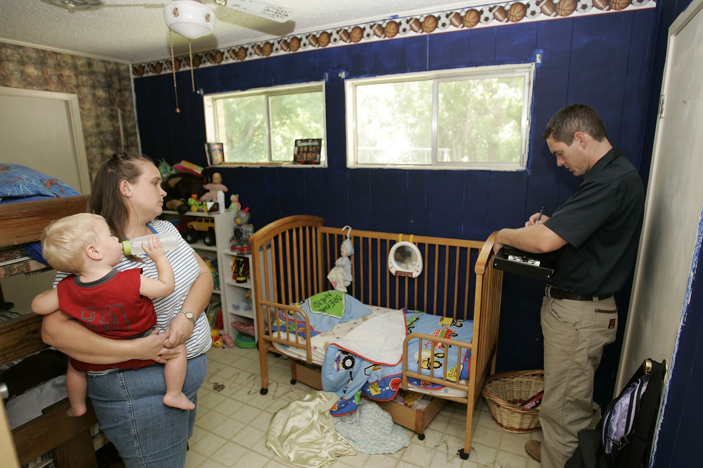
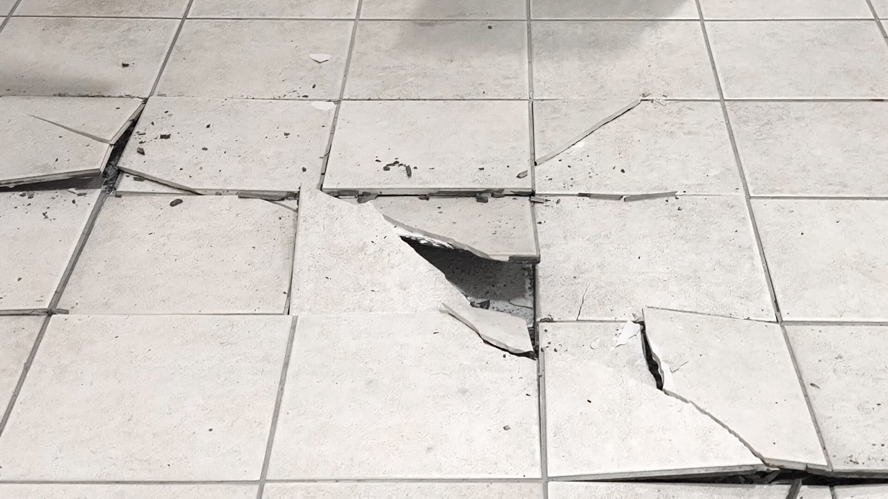
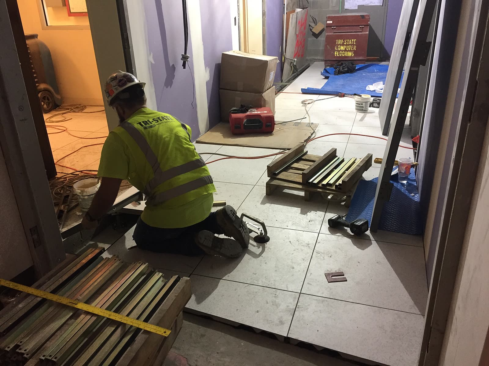
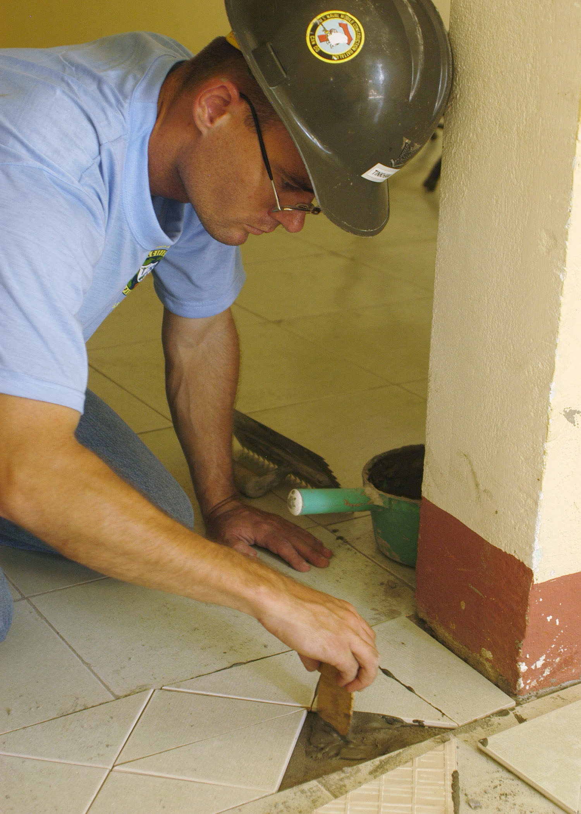
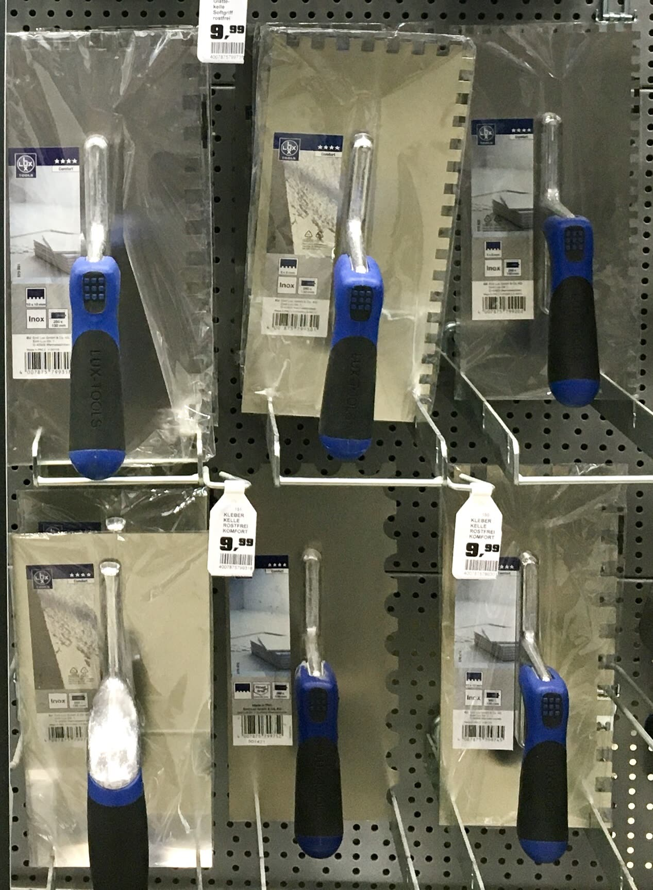

Home inspectors
Tap a whole room in minutes and hand over a map, not a hunch.
Inspect a floor
Drop a coin on each tile. Your laptop listens, learns this floor, and marks the tiles that came loose underneath.
A tile that lost its bed sounds dull and rings low when something hard lands on it. Inspectors hear it by ear. Thud hears it on every tile and keeps the evidence.

Tap a whole room in minutes and hand over a map, not a hunch.
Inspect a floor
Prove the floor was already loose on the day you moved in.
Every inspection is sealed into a hash chain on your disk. Change one tile later and the chain breaks.

Same coin. Same drop. Every tile.No floor sounds like another, so a model trained once can't judge yours. TabPFN learns this floor from the few tiles you confirm, in seconds, with no training run. Gemma looks at your photos and writes the report. Both run here.
Everything below works in the inspector further down this page. Try the demo floor if you don't have a tile to tap yet.
Open the inspector
Drop a coin through a pen tube onto each tile, row by row. Thud finds every tap and measures its pitch and ring.
Thud points at the odd-sounding tiles first. Check a few by hand and mark two solid and two hollow.
TabPFN scores the rest of the floor. Add photos and Gemma writes the report, sealed with a receipt.
Record one row at a time. Each recording fills the next tiles in order, left to right, top to bottom.
Hold the phone or laptop still on the floor. Drop the coin from the same height each time, about one tap a second.
Click a tapped tile to mark it as solid, hollow, or not checked.
No taps yet.
Checking the chain
No receipts yet. Write a report to seal the first one.